Speculative Decoding
Large Language Models : A Hands-on Approach
Motivation
The Memory Wall Problem
LLM inference is memory-bound, not compute-bound:

- Each token requires full forward pass
- KV-cache helps avoid recomputation but still requires:
- Reading all model parameters every step
- Computing attention against growing KV-cache
- Sampling one token… then repeating
Key Observation
Many tokens are “easy” to predict (e.g., common words, code boilerplate, repetitive patterns). Verification of K candidate tokens costs approximately the same as generating 1 token!
The CPU Analogy: Speculative Execution
From CPU Architecture to LLMs:
CPU Branch Prediction - CPU guesses which branch will be taken - Executes speculatively, rolls back if wrong - Massive performance wins despite some wasted work
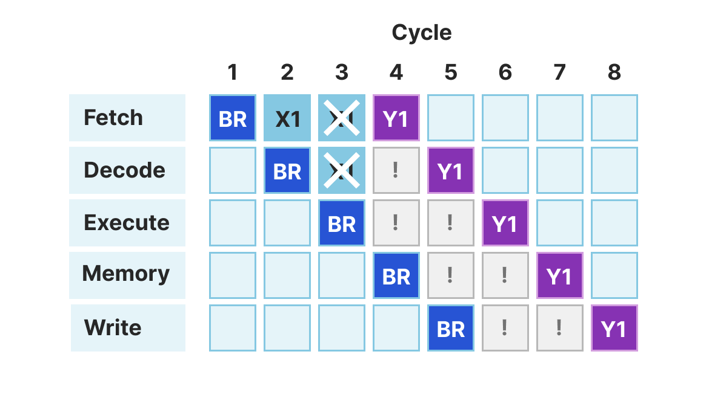
LLM Speculative Decoding
- Small/fast draft model guesses next K tokens
- Large model verifies all K in parallel (one forward pass!)
- Accept correct prefix, resample from divergence point
- Lossless: Sample from the exact same distribution!
LLM Speculative Decoding

Critical Insight
Scoring K tokens in parallel ≈ same latency as generating 1 token because:
- Memory bandwidth is the bottleneck
- GPU compute is underutilized in single-token generation
- Parallel verification exploits available FLOPs
The Universal Framework
Draft -> Verify -> Accept/Reject
- Draft: Generate K candidate tokens cheaply via a draft mechanism
- Methods differ in HOW they draft (separate model, heads, n-grams)
- Verify: Run target model on all candidates in parallel
- Get true probabilities for each position
- Single forward pass for all K tokens
- Accept/Reject: Use rejection sampling to maintain target distribution
- Accept prefix of correct tokens
- Resample at first rejection point using modified rejection sampling
\[\text{Speedup} = \frac{K \cdot \alpha}{1 + \frac{T_{\text{draft}}}{T_{\text{verify}}}}\]
Where \(\alpha\) is the acceptance rate and \(K\) is the draft length.
The Foundation (2022-2023)
Two concurrent Google papers established the field:
Fast Inference from Transformers via Speculative Decoding (Leviathan et al., 2022)
Accelerating Large Language Model Decoding with Speculative Sampling (Chen et al., 2023)
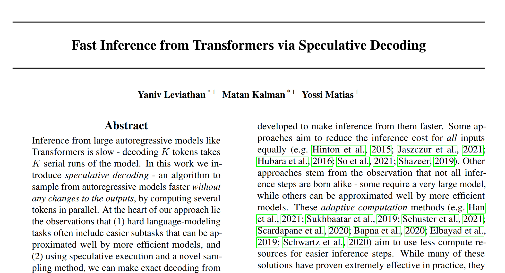
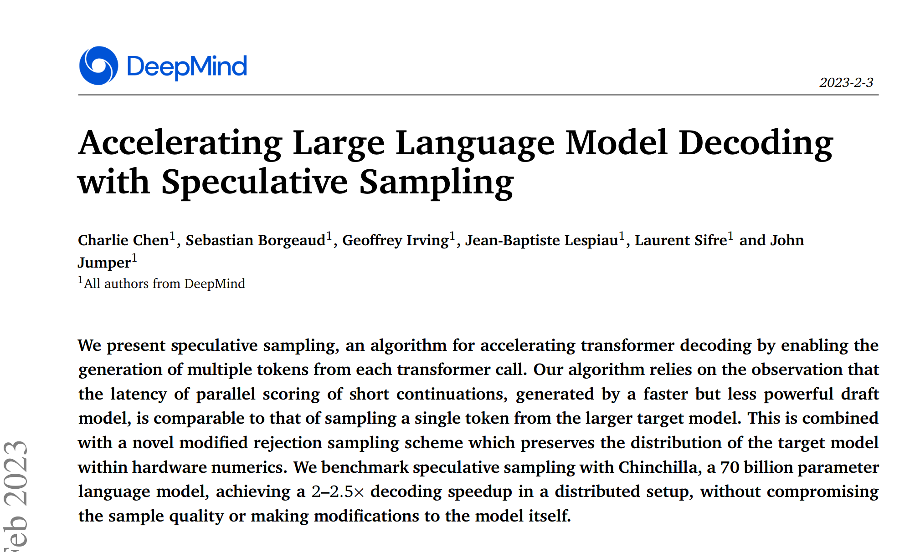
Algorithm: Auto-regressive Sampling (ArS)
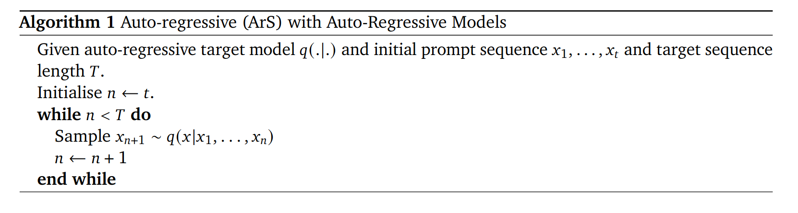
One token per forward pass. This is what we want to speed up.
Algorithm: Speculative Sampling (SpS)
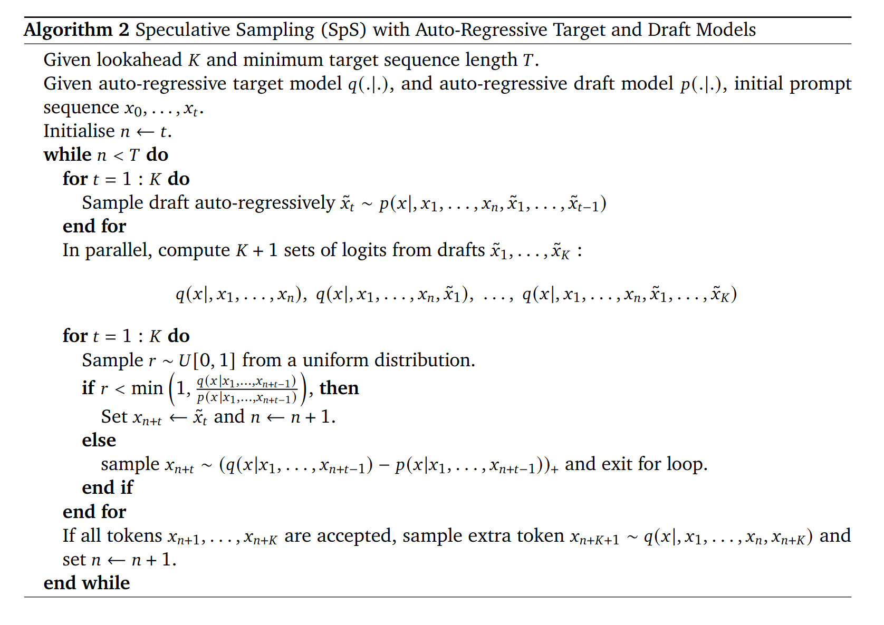
Modified Rejection Sampling
Guarantees lossless sampling from target distribution:
Case 1: Target prob >= Draft prob \[p_{\text{target}}(x) \geq p_{\text{draft}}(x)\]
Always accept (target “likes” this token at least as much)
Case 2: Target prob < Draft prob
\[p_{\text{target}}(x) < p_{\text{draft}}(x)\]
Reject with probability \(\frac{p_{\text{draft}}(x) - p_{\text{target}}(x)}{p_{\text{draft}}(x)}\)
If rejected, resample from the residual distribution.
Theorem (Chen et al., 2023)
Modified rejection sampling guarantees that the final output distribution is identical to sampling from the target model alone. This is not an approximation—it’s exact!
Modified Rejection Sampling: Illustrated
Example: Draft model proposes token “the” at position \(t+1\)
| Token | \(p_{\text{draft}}\) | \(p_{\text{target}}\) |
|---|---|---|
| the | 0.50 | 0.30 |
| a | 0.20 | 0.35 |
| this | 0.15 | 0.25 |
| an | 0.10 | 0.05 |
| that | 0.05 | 0.05 |
Intuition
The residual distribution captures what the target model “wanted more of” than the draft. Tokens the draft overestimated (like “the”) get zero residual probability. Tokens the target preferred more (like “a”, “this”) get the leftover mass — ensuring the combined process exactly matches the target distribution.
Step 1: Draft sampled “the” (\(p_d = 0.50\), \(p_t = 0.30\))
\(p_t < p_d\) → accept with prob \(\frac{p_t}{p_d} = \frac{0.30}{0.50} = 0.60\)
Step 2: Coin flip says reject! → resample from residual
Step 3: Compute residual \(p'(x) = \text{norm}(\max(0,\; p_t - p_d))\)
| Token | \(p_t - p_d\) | \(p'\) (residual) |
|---|---|---|
| the | -0.20 → 0 | 0.00 |
| a | +0.15 | 0.43 |
| this | +0.10 | 0.29 |
| an | -0.05 → 0 | 0.00 |
| that | 0.00 → 0 | 0.00 |
Resample → picks “a”
Draft Model Options (Chen et al.)
- Smaller models, same family
- Easy to obtain, similar distribution, Different serving topology needed
- Distilled model
- Optimized for speculation, Training cost is high
- N-gram
- Zero overhead, no training, Limited to simple patterns
Results
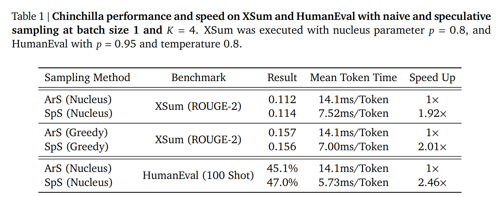
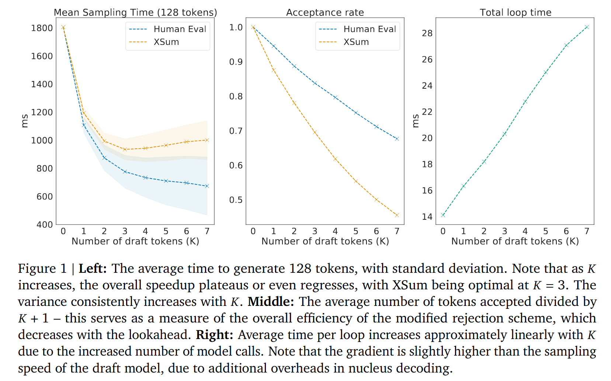
- Setup: 4B parameter draft model optimized for 16 TPU topology (matching 70B Chinchilla)
- Performance: 1.8ms/token vs 14.1ms/token for target (7.8x theoretical)
- Real-world: ~2-3x speedup depending on domain
- Temperature effect: Higher temperature → lower acceptance rate
- Greedy decoding (temp=0) gives highest speedup
Limitations
- Draft Model Acquisition:
- Need a separate, well-aligned draft model
- Training cost can be significant
- Distribution shift between draft and target
- Serving Complexity
- Two models to serve and maintain
- Different optimal topologies for different model sizes
- Memory overhead of second model
- Single Candidate
- Only one draft sequence per iteration
- Suboptimal use of parallel verification capacity
- Fixed Draft Length:
- γ is static, but difficulty varies by context
- Easy tokens waste draft capacity
- Hard tokens might need more speculation
Medusa: No Separate Draft Model!
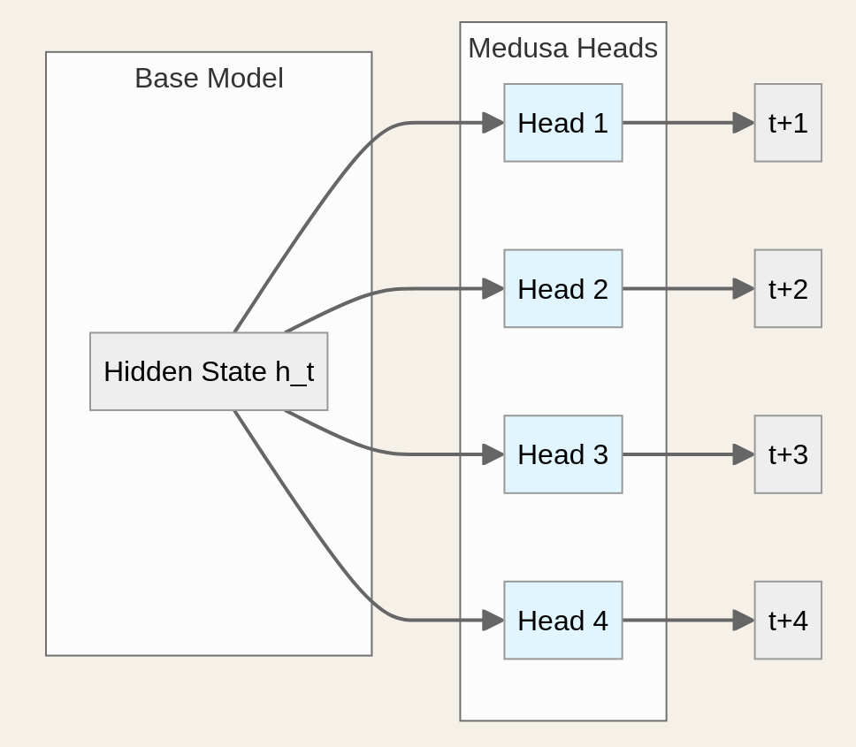
Medusa Architecture (Cai et al., 2024)
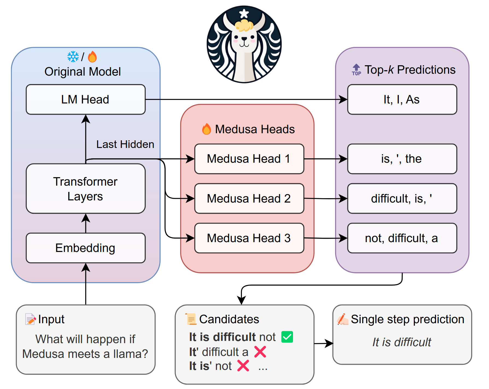
- Idea: Add K small “Medusa heads” on top of target model’s last hidden states
- Head k: Predicts token at position t+k+1
- Parameters: ~0.5% additional parameters per head
- Training: Freeze backbone, train heads with cross-entropy loss
Medusa: Tree Attention Verification
Each head generates multiple top predictions:
- Head 1: {a₁, a₂, …, aₖ}
- Head 2: {b₁, b₂, …, bₖ}
- Head 3: {c₁, c₂, …, bₖ}
Construct sparse tree of candidate continuations
Custom attention mask: each token only attends to ancestors in tree
Use appropriate positional encoding for tree structure
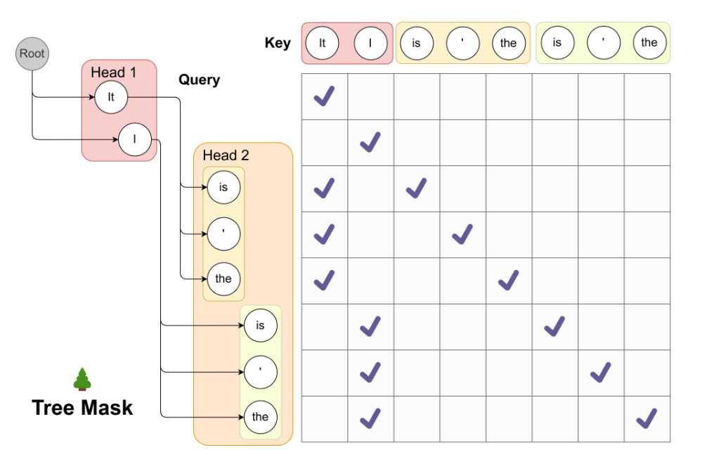
Medusa: Tree Attention Verification
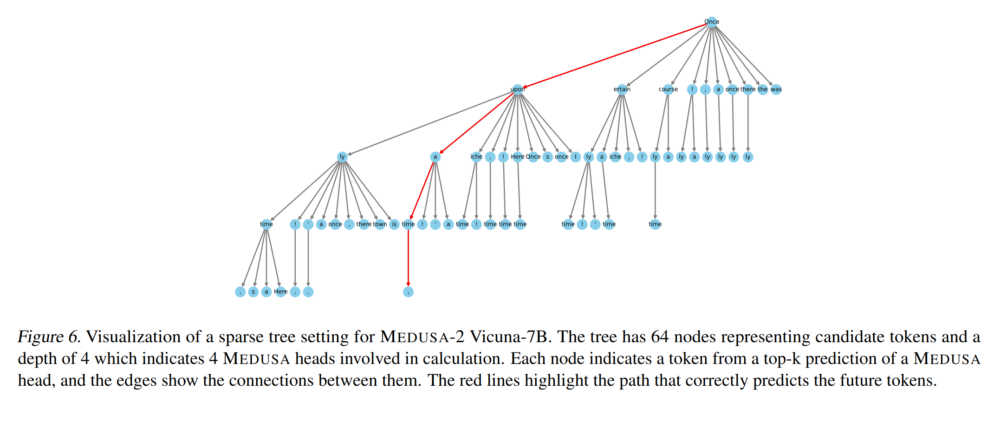
Medusa Training : MEDUSA-1: Frozen Backbone
- Cross-entropy loss between MEDUSA head predictions and ground truth tokens
- For ground truth token \(y_{t+k+1}\) at position \(t + k + 1\):
Loss for k-th head: \(L_k = -\log p_t^{(k)}(y_{t+k+1})\)
\(p_t^{(k)}(y)\) = probability of token y predicted by k-th head
Add weight \(\lambda_k\) to balance loss across different heads
- Total MEDUSA loss: \[L_{MEDUSA-1} = \sum_{k=1}^{K} -\lambda_k \log p_t^{(k)}(y_{t+k+1})\]
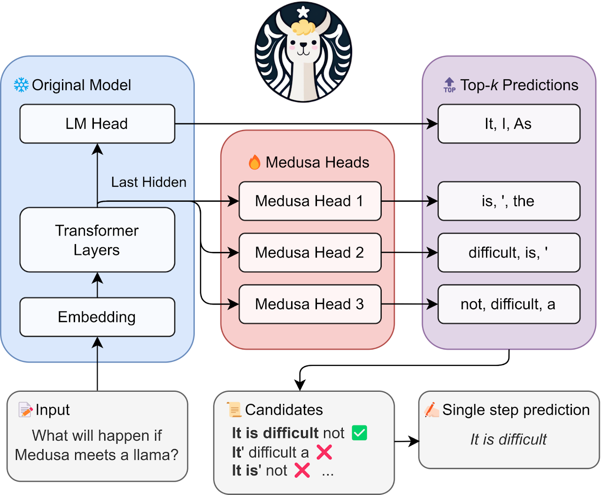
Medusa Training : MEDUSA-2 : Joint Training
Objective: Maintain base model capability while training heads.
- Combined Loss: Add the backbone model’s cross-entropy loss to the MEDUSA loss.
- Backbone Loss: \[L_{\text{LLM}} = -\log p_t^{(0)}(y_{t+1})\]
- Balance: Use weight \(\lambda_0\) to balance the base model and Medusa heads.
Total MEDUSA-2 Loss: \[L_{\text{MEDUSA-2}} = L_{\text{LLM}} + \lambda_0 L_{\text{MEDUSA-1}}\]
Medusa: Results
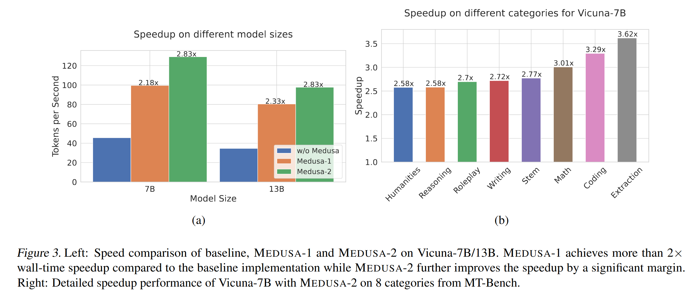
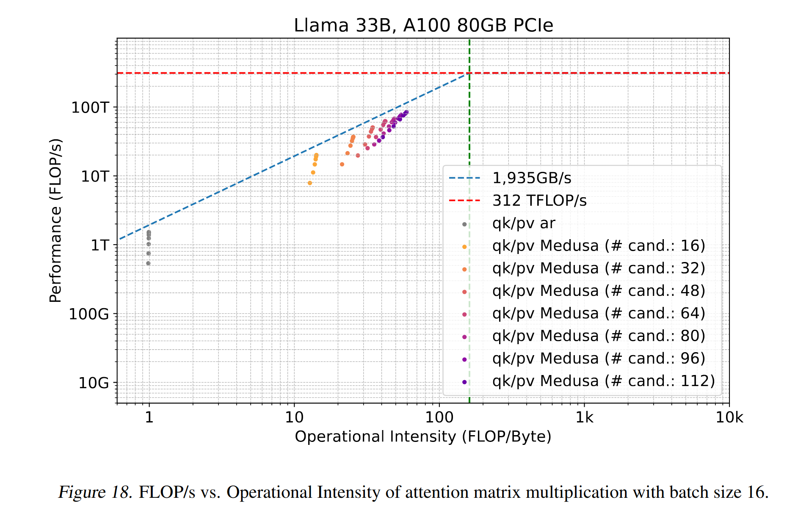
Results - Speedup: ~2-3× on average - Arithmetic Intensioty : 41× operational intensity gain
Medusa: Limitations
Key Limitations 1. Position-Independent Prediction: Head 2 doesn’t know what Head 1 predicted 2. Limited Information: Only sees top-layer features 3. No dependencies: Can’t model dependencies between draft tokens 4. Speedup plateaus: ~3× even with more heads
The Core Problem
Medusa heads predict position i+k independently of positions i+1, i+2, …, i+k-1. Lower acceptance rates for later positions in the draft.
EAGLE Series: Feature-Level Autoregression
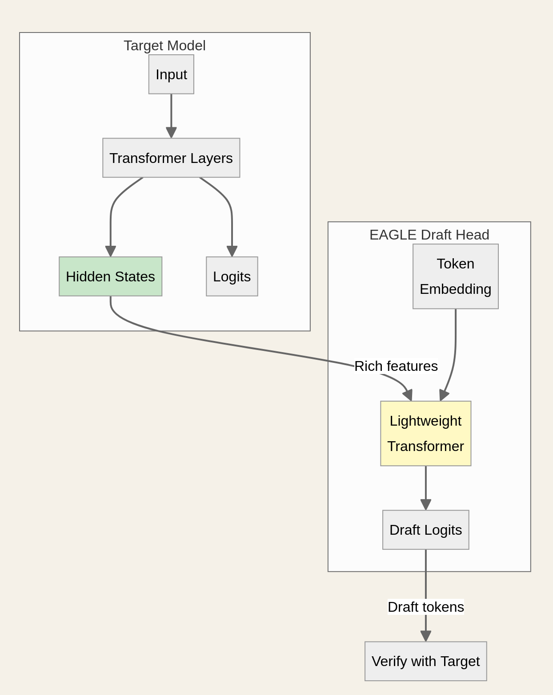
EAGLE : Core Innovation
Key Insight: Autoregression at the feature level is simpler than at the token level.
- Features contain richer information than just next-token logits
- predict next feature vector f_{n+1} instead of token t_{n+1}
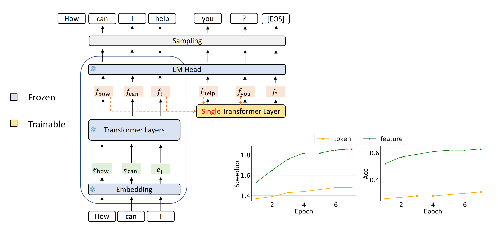
EAGLE : Feature Uncertainty
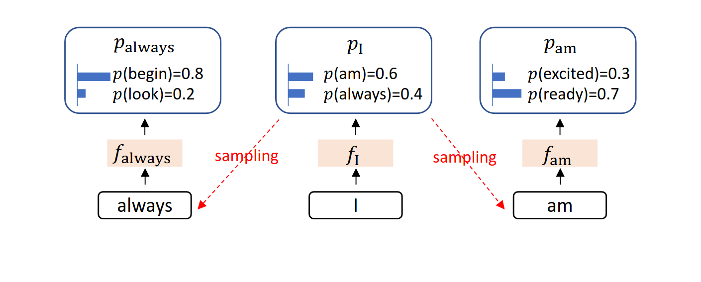
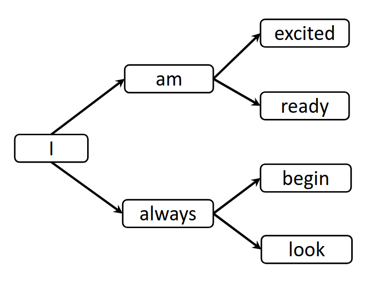
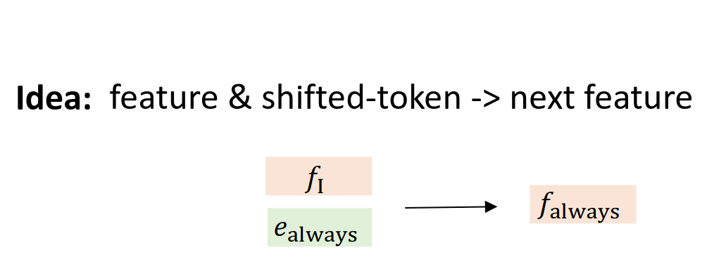
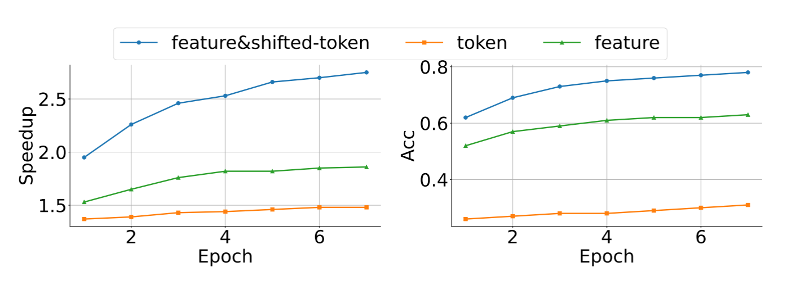
EAGLE : Architecture
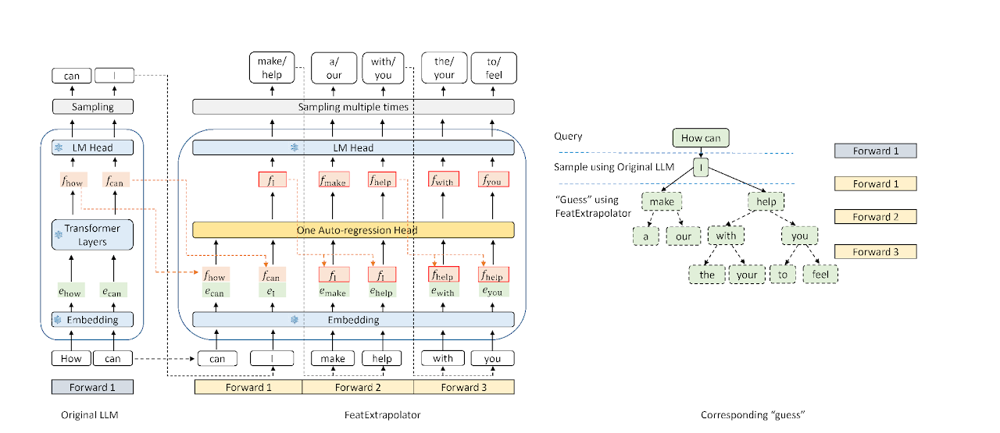
- Draft model predicts next feature vector f_{n+1} based on embedding of current token and previous features
- Use predicted feature to compute token probabilities for next token
- Tree structure allows multiple candidates to be verified in parallel
EAGLE-1: Training
Training Loss \[L = L_{\text{fea}} + L_{\text{token}}\]
- L_fea: Regression loss for feature prediction
- L_token: Classification loss for token prediction
Eagle-1 : Verification
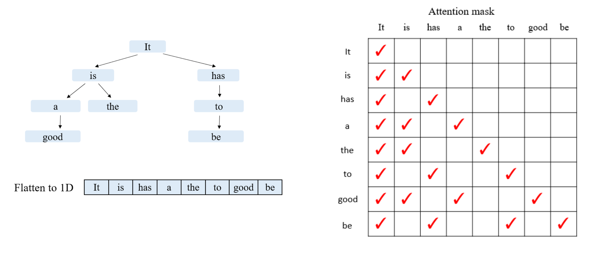
Multi-Round Speculative Sampling For tree-structured drafts:
- Try candidate 1 with original p
- If rejected -> residual p₁ = norm(max(0, p - p̂₁))
- Try candidate 2 against p₁ (not original p!)
- Continue until acceptance or exhaustion
Maintains invariant: sampling from “remaining” probability mass.
EAGLE-1: Results
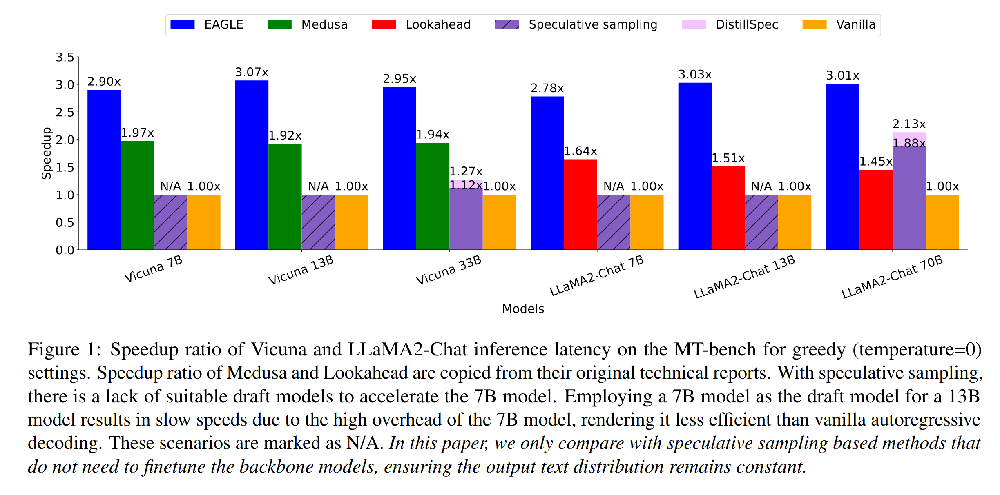
- Speedup: ~3×
- Average acceptance length τ: 3-4 tokens
- Lossless: Provably maintains target distribution
EAGLE-2: Context-Aware Speculation (2024)
Problem: Static tree structure wastes resources on “easy” vs “hard” tokens.
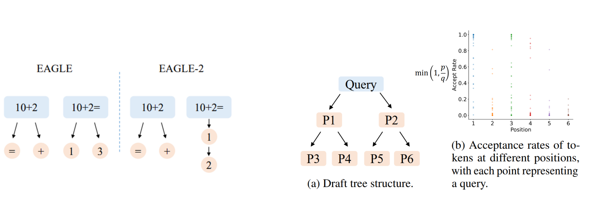
- Acceptance rate is context-dependent, not just position-dependent
- “10+2” : next token uncertain (=, +, etc.)
- “10+2=” : next token almost certain (“1”)
Solution: Dynamic tree construction using draft model confidence
- High confidence -> expand tree deeper
- Low confidence -> prune, keep tree shallow
EAGLE-2: Context-aware dynamic draft tree
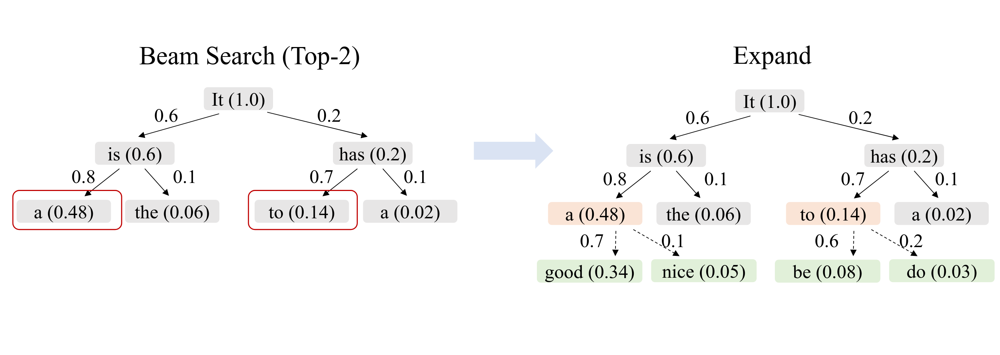
EAGLE-2: Context-aware dynamic draft tree
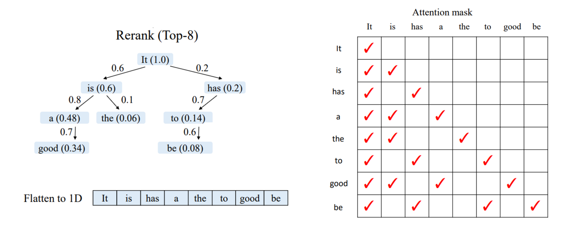
EAGLE-2: Results
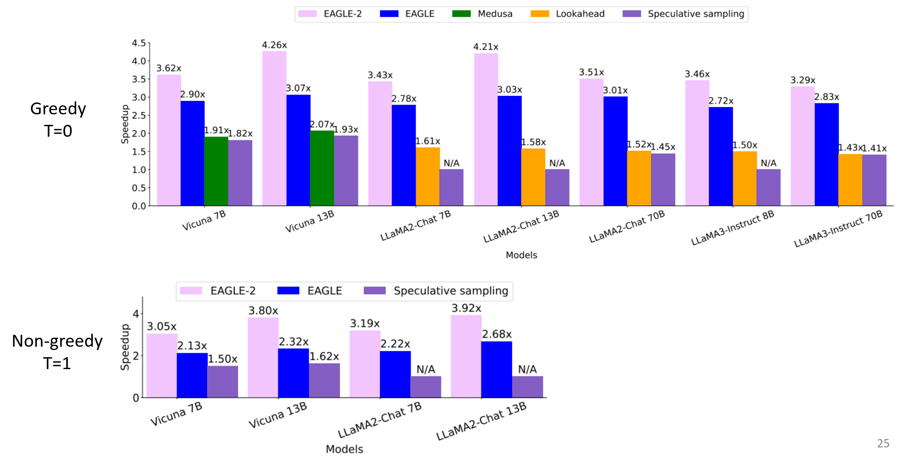
Important
Performance
- 20-40% faster than EAGLE-1
- No additional training required (completely lossless)
- Context-aware: Easy contexts (code boilerplate) get deeper trees
- Hard contexts (creative writing) get shallower, wider trees
Inference Framework Support
| Framework | Methods Supported |
|---|---|
| vLLM | EAGLE-2, EAGLE-3, Medusa, N-gram, Suffix Decoding |
| SGLang | EAGLE-3, MTP (DeepSeek), Standalone, N-gram |
| TensorRT-LLM | Draft-target, EAGLE-3, MTP, User-provided |
| Hugging Face Transformers | Universal Assisted Generation (UAG), Dynamic Speculation |
| llama.cpp | Universal Assisted Decoding, Speculative stats |
Demo 1: Hugging Face Transformers
Setup
Using assistant_model parameter for automatic speculative decoding.
from transformers import AutoModelForCausalLM, AutoTokenizer
import torch
import time
# Target model (large)
model_name = "unsloth/Meta-Llama-3.1-8B-Instruct-bnb-4bit"
assistant_name = "double7/vicuna-68m" # Tiny assistant
tokenizer = AutoTokenizer.from_pretrained(model_name)
model = AutoModelForCausalLM.from_pretrained(
model_name,
torch_dtype=torch.bfloat16,
device_map="auto"
)
assistant = AutoModelForCausalLM.from_pretrained(
assistant_name,
torch_dtype=torch.bfloat16,
device_map="auto"
)
prompt = "Explain quantum computing in simple terms:"
inputs = tokenizer(prompt, return_tensors="pt").to(model.device)
# Baseline
start = time.time()
outputs = model.generate(**inputs, max_new_tokens=100)
baseline_time = time.time() - start
print(f"Baseline: {baseline_time:.2f}s")
# With speculative decoding
start = time.time()
outputs = model.generate(
**inputs,
assistant_model=assistant,
max_new_tokens=100
)
spec_time = time.time() - start
print(f"Speculative: {spec_time:.2f}s")
print(f"Speedup: {baseline_time/spec_time:.2f}x")Demo 2: vLLM with EAGLE-3
When to Use Speculative Decoding?
✅ Best For - Low batch sizes (1-16): Memory-bound regime - Interactive applications: Chatbots, coding assistants - Repetitive content: Code generation, structured outputs - Latency-sensitive: Real-time applications - Greedy decoding: Highest acceptance rates
❌ Avoid When - High batch sizes (32+): Compute-bound, benefits diminish - Very high temperature: Acceptance rate drops - Creative writing: Unpredictable tokens, low acceptance - Memory constrained: Draft model adds overhead
Rule of Thumb
If your GPU utilization is <50% during decoding, speculative decoding will likely help. Check with nvidia-smi or profiling tools.
Temperature vs Acceptance Rate
| Temperature | Acceptance Rate | Speedup |
|---|---|---|
| 0.0 (Greedy) | 85-95% | 4-6× |
| 0.5 | 70-80% | 3-4× |
| 0.7 | 60-70% | 2.5-3× |
| 1.0 | 50-60% | 2-2.5× |
| >1.0 | <50% | 1.5-2× |
Dynamic Adjustment Modern frameworks (vLLM, SGLang) automatically adjust draft length based on observed acceptance rates.
Integration with Other Optimizations
Speculative decoding is orthogonal to other techniques:
- Quantization: Can quantize both draft and target (e.g., FP8, INT8)
- FlashAttention: Works seamlessly with tree attention
- Continuous Batching: Needs careful KV cache management for rejected branches
- Prefix Caching: Draft tokens can use cached prefixes
- Disaggregated Serving: EAGLE-3 works with prefill-decode disaggregation
KV Cache Management
Naive approach: Discard all draft entries, recompute for accepted ones.
Better: Selective retention (EAGLE’s approach) - Keep KV for accepted path only - Discard KV for rejected branches - Track cache positions corresponding to tree nodes
Key Takeaways
Speculative decoding is lossless: Exact same distribution as target model
Speedup comes from parallel verification: K tokens verified in ~same time as 1 generated
Evolution:
- Original: Separate draft models
- Medusa: Added heads (position-independent)
- EAGLE: Feature-level autoregression
- EAGLE-3: Training-time test + multi-layer fusion
Production ready: vLLM, SGLang, TensorRT-LLM, Transformers all have native support
Best for: Low batch sizes, repetitive content, latency-sensitive applications
Performance Cheat Sheet
| Method | Max Speedup | Overhead | Training Required | Framework Support |
|---|---|---|---|---|
| Original (draft model) | 2-3× | Full draft model | Yes (separate model) | All |
| Medusa | ~2-3× | ~0.5% params | Yes (heads only) | vLLM, SGLang, MLC |
| EAGLE-1 | ~3× | ~2% params | Yes (feature head) | vLLM, SGLang, MLC |
| EAGLE-2 | ~4× | ~2% params | No (same as EAGLE-1) | vLLM, SGLang |
| EAGLE-3 | 3-6.5× | ~3% params | Yes (advanced) | vLLM, SGLang, TensorRT |
| DeepSeek MTP | ~1.8× | Built-in | Pre-trained | SGLang, TensorRT |
Essential Papers
- Leviathan et al. (2022) - “Fast Inference from Transformers via Speculative Decoding” [arXiv:2211.17192]
- Chen et al. (2023) - “Accelerating Large Language Model Decoding with Speculative Sampling” [arXiv:2302.01318]
- Cai et al. (2024) - “Medusa: Simple LLM Inference Acceleration Framework” [arXiv:2401.10774]
- Li et al. (2024) - “EAGLE: Speculative Sampling…” [arXiv:2401.15077]
- Li et al. (2025) - “EAGLE-3: Scaling up Inference Acceleration via Training-Time Test” [arXiv:2503.01840]
- Xia et al. (2024) - “Unlocking Efficiency: A Comprehensive Survey of Speculative Decoding” [arXiv:2401.07851]